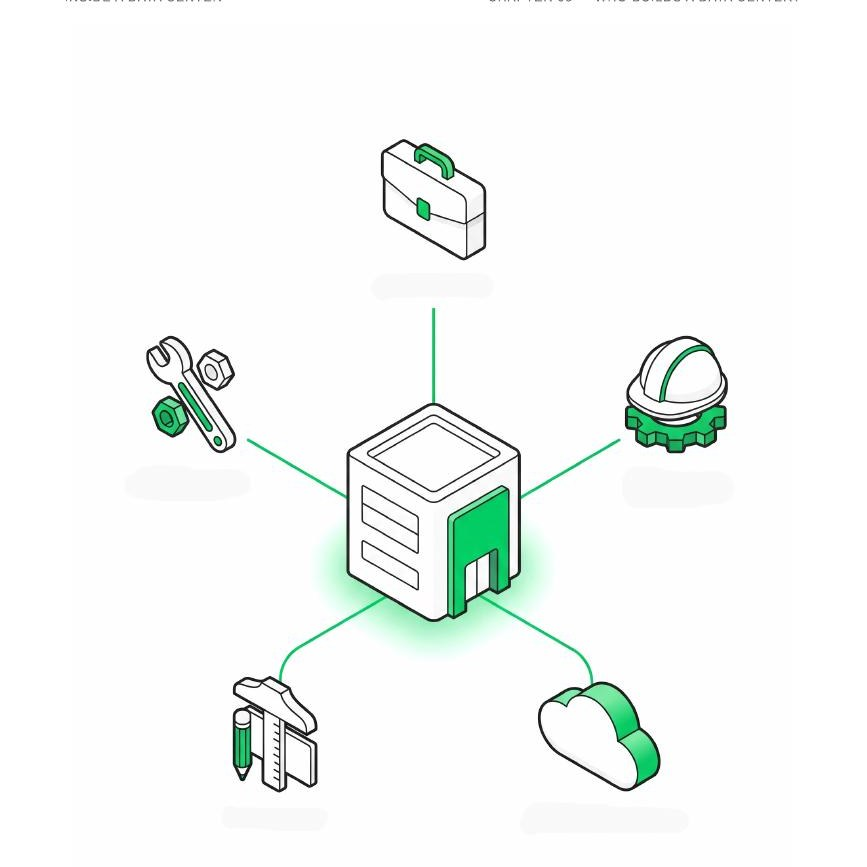

Two job postings, same title: "Data Center Architect." One wants AWS certifications, Python, and five years of network engineering. The other wants a professional architecture license, Revit fluency, and experience with MEP coordination. Neither posting is wrong — they're describing two different jobs that happen to share a name, and almost nothing written about this career bothers to separate them.
That confusion costs people real time. If you spend six months studying cloud infrastructure for a role that actually wanted a licensed building designer — or vice versa — you've prepared for the wrong interview. This guide untangles the two paths, what each actually pays, and how to get into either one.
The two jobs hiding under one title
| IT / Solutions Architect | Building / Facility Architect | |
|---|---|---|
| Designs | The digital infrastructure — servers, network, storage, cloud topology | The physical building — structure, power routing, cooling, life safety |
| Typical background | Computer science, IT, networking | Architecture or engineering degree, licensure |
| Core tools | Cloud platforms (AWS, Azure, GCP), network diagrams | Revit, BIM coordination, CAD, code compliance |
| Typical employer | Hyperscalers (AWS, Google, Microsoft, Meta), IT consultancies | AEC firms, developers, specialized operators |
| Question they answer | "How do we route and scale the workload?" | "How do we power, cool, and physically house it?" |
What the IT/Solutions Architect does day to day
This is the more common usage of the title, especially at large tech companies. The role centers on designing and expanding the cloud and IT infrastructure that lives inside the building — not the building itself. Day to day, that means:
- Performing infrastructure design, strategy, and services across compute, storage, and network layers
- Defining server, storage, and network architecture, including virtualization and automation
- Researching new technologies, evaluating vendors, and integrating hybrid or multi-cloud solutions
- Leading migration, deployment, and scaling of workloads across the infrastructure
- Working cross-functionally with security, operations, and product teams to keep everything running
If a job description mentions Kubernetes, hyperconverged infrastructure, SDN, or workload balancing — you're looking at this track.
What the Building/Facility Architect does day to day
This is the smaller, more specialized track — and it's the one this site and Inside a Data Center are built around. A data center is a building type most architects never train for, and the role brings together disciplines that rarely sit in the same room:
- Site selection and evaluating power/utility availability before a single drawing exists
- Coordinating structural, electrical, and mechanical systems around a building whose real client is a server room, not a person
- Designing for Tier and redundancy requirements set by the client (N, N+1, 2N — this determines a huge share of the floor plan)
- Planning cooling strategy in coordination with mechanical engineers, since it drives both the building envelope and the site's PUE
- Running BIM coordination across every discipline, since clash detection matters enormously more here than in a typical building
- Navigating fire, life-safety, and security requirements specific to critical infrastructure
Skills and qualifications for each path
| IT / Solutions track | Building / Facility track |
|---|---|
| Cloud platforms: AWS, Azure, Google Cloud | BIM proficiency, especially Revit |
| Networking fundamentals and protocols | MEP systems coordination |
| Virtualization and containerization | Understanding of Tier classification and redundancy (N, N+1, 2N) |
| Scripting/automation (Python, Terraform) | Code compliance for critical-infrastructure buildings |
| Degree: computer science, IT, or equivalent experience | Degree: architecture or engineering, often licensure required |
Certifications that actually matter
Neither path strictly requires a certification to break in, but a handful signal real credibility to employers:
- BICSI DCDC (Data Center Design Consultant) — building-side, widely recognized in facility design
- CNet CDCDP (Certified Data Centre Design Professional) — building-side, vendor-neutral design credential
- AWS Certified Solutions Architect — IT-side, the most commonly requested cloud credential
- Cisco CCNP Data Center — IT-side, for network-heavy infrastructure roles
- ISO 19650 familiarity — increasingly expected on the building side for any project run through BIM, since data center clients tend to demand disciplined information management
None of these replace hands-on project experience, but on the building side in particular, they're rare enough that having one puts you ahead of most applicants. We break down which one to actually prioritize, and why, in a dedicated certifications guide for architects and engineers.
The rest of the cast — who else builds a data center
The architect, on the building side, is never working alone — and understanding the other roles in the room is part of learning to speak their language. A data center brings together five distinct roles on a typical project:

- Developer — identifies the site, finances the project, and drives construction, sometimes for their own use (a hyperscaler building for itself), sometimes to sell or lease once delivered
- Operator — runs the building once delivered: maintenance, security, 24/7 on-call staff, service-level contracts
- Cloud Provider — the end client, sometimes the same entity as the Developer
- Architect — organizes the space and ensures compliance across every technical constraint above
- Engineers — size the electrical, cooling, and structural systems that make the whole thing physically possible
A data center doesn't have a single author — it has a team. The architect's job is to organize the space and speak every specialist's language well enough to earn a seat at the table.
Salary snapshot
Pay for this title ranges enormously — anywhere from roughly $82,000 to well over $280,000 depending on the source you check. That's not bad data; it's the market pricing two different jobs, at wildly different seniority levels, under one search term. We break down the full picture — by company, by seniority, and by which track you're actually being hired for — in a dedicated salary guide covering AWS, Google, Microsoft, Meta, and NVIDIA.
How to actually break in from AEC/BIM
If you're an architect, engineer, or BIM manager eyeing the building-design track specifically, the path in looks different from a typical career pivot:
- Learn the vocabulary before the interview. PUE, Tier, redundancy, IT hall — these come up constantly, and fluency signals you've done your homework before anyone asks you to prove it on a project.
- Build a portfolio piece, even a personal one. A conceptual data center layout, a Tier III floor plan exercise, anything that shows you've applied the vocabulary to an actual design problem.
- Target firms already building data centers rather than applying cold to generic architecture postings. Specialized operators and AEC firms with an active data center practice are a much faster route in than a general portfolio submission.
- Network specifically within the space. Data center design is a small, specialized world — a handful of conversations with people already doing this work will teach you more than months of generic job-searching.
"Data center architect" is two jobs wearing one job title. Figure out which one you're chasing, learn its specific vocabulary, and target it directly — don't let a confusing job market cost you months preparing for the wrong role.